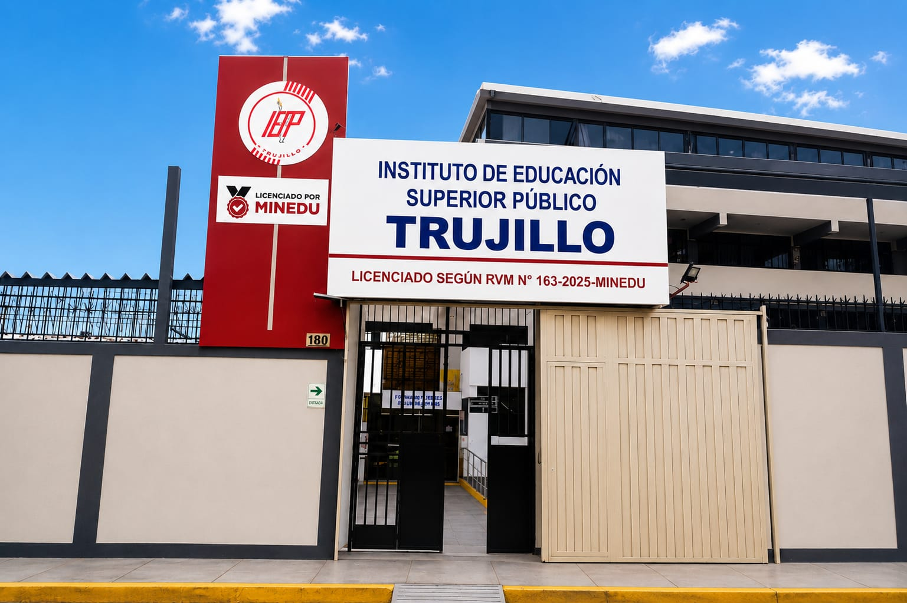

Licenciamiento
Instituto de Educación Superior Público "Trujillo" – Institución Licenciada
El Instituto de Educación Superior Público "Trujillo" cuenta con Licenciamiento Institucional otorgado por el Ministerio de Educación (MINEDU) mediante la Resolución Viceministerial N.° 163-2025-MINEDU, que autoriza su funcionamiento al verificar el cumplimiento de las Condiciones Básicas de Calidad establecidas por la Ley de Institutos y Escuelas de Educación Superior. Este reconocimiento garantiza que nuestra institución ofrece un servicio educativo de calidad, orientado a la formación integral de profesionales técnicos competentes y comprometidos con el desarrollo del país. Para conocer el contenido completo de la resolución de licenciamiento, puede consultar el documento oficial del Ministerio de Educación en el siguiente enlace:
Ver Resolución de Licenciamiento